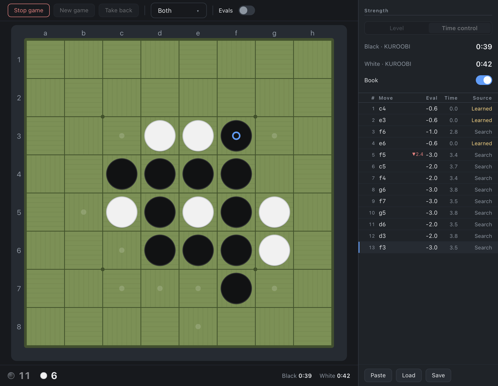

[本文 — 導入] [見出し] [本文] [コード] [本文] [項目] [項目] [列][列][列] [値][値][値] [本文] [言語] {{t.copy}} [コード] [見出し] [小見出し] [本文] [引用] [局面の説明] {{t.openInStudy}}  [手順] [手順] [本文] {{t.prev}} {{t.prevTitle}} {{t.next}} {{t.nextTitle}}